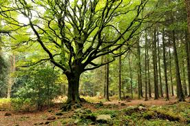

Bienvenue à Arcadia
Découvrez Arcadia, un zoo situé en France près de la forêt de Brocéliande, en bretagne depuis 1960. Il possède tout un panel d’animaux, réparti par habitat (savane, jungle, marais) et font extrêmement attention à leurs santés.
